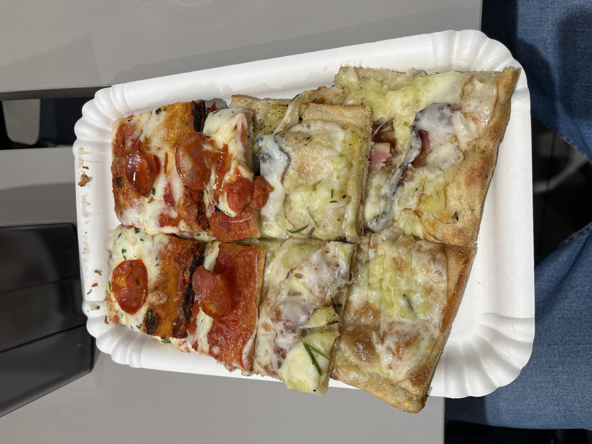
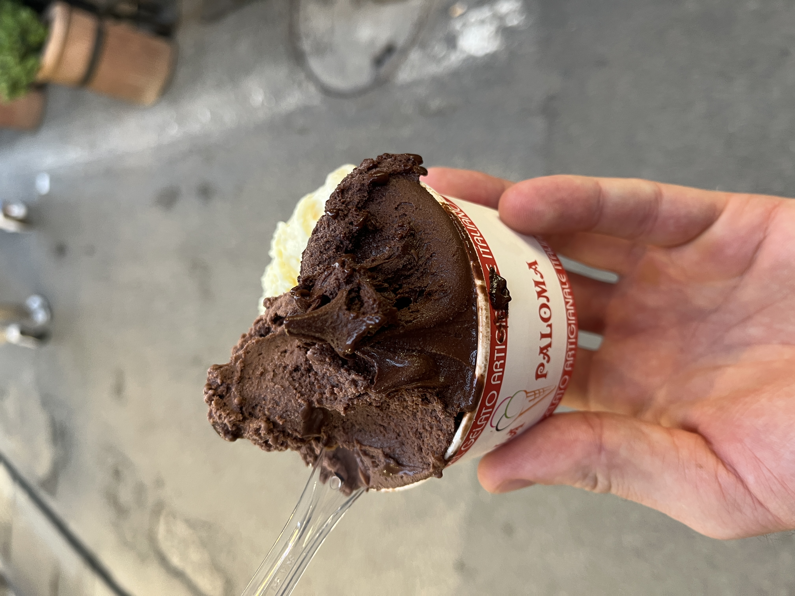

April 2, 2025
The Highlights
This weekend I flew to Rome for a far too brief trip to visit my friends from UW who came to visit for spring break. I was only in Rome for a little bit more than a day and a half but I’d say I made the most of it. Rome has by far the most highlights of European cities I’ve been to so far. So many iconic ruins to visit. That being said, I don’t think I could ever live there, too many people and it’s not the cleanest city.
Colosseum
This was my second time at the Colosseum and it was as entrancing as the first time. It’s amazing how well it’s stood the test of time, shout out Roman concrete. It was significantly more crowded than it was last time in 2021 at the tail end of the pandemic. I wish I had been able to go inside but I ran out of time to make it happen on this trip. My friends went inside on Monday after I had left and got their photo taken by Bo Nix, the quarterback for the Denver Broncos… small flex.
Pantheon
We all agreed that this was the highlight of our time in Rome. I missed seeing the Pantheon last time I was in Rome and I’m super glad I got to see it this time. We were waiting in the long line to get in when we were approached by some tour guides who promised to get us in instantly and give us a private guided experience for only $10 ($15 total) more than regular admission. After some debating, we decided to go for it. Best decision! We probably avoided waiting in line for an extra hour and our tour guide was great, look up Jessica Coppola (jessicacoppola8@gmail.com) if you’re ever in Rome. It was fascinating to learn about how much effort went into building the Pantheon, from the many types of marble mined from all over the Roman Empire to the rolling of the pillars for hundreds of miles from mine to the final destination. Also shout out to Pope Boniface IV for saving the Pantheon from destruction when he restored it to use as his private place of worship. The Pantheon definitely cracks the top 3 coolest buildings I’ve seen in Europe.
Monument of Vittorio Emanuele II
Really big fan of this monument, especially because it was free to go up and in. The views from the top of Rome were fantastic! Hard to imagine the amount of effort that went into lifting the 50 equestrian statue of Victor Emmanuel II into place on its pedestal.
Trajan’s Forum
Not much to say about Trajan’s Forum, we found our there on the first night while wandering. Lots of cool old pillar ruins. Ancient ruins are so amazing.
Trevi Fountain
The Trevi Fountain was as beautiful as the last time I saw it, although with way bigger crowds this time. It felt like we were in a club, constantly pushing our way through people. I did really like being able to go to the lower level right next to the fountain to take pictures.
Spanish Steps
The Spanish Steps were fine but overrated in my opinion, they’re just too crowded. Watching the Italian police constantly tell people not to sit down on the steps was very entertaining. I will say the view from the top of the steps was very pretty.
Pictures


Food
As expected, I ate lots of pizza and pasta this weekend! Saturday night, we ate dinner in a cute restaurant called Hostaria al Boschetto. I ordered the fusilli with bacon, mushrooms, rocket, and cheese. I forgot how much I had missed fresh pasta. I definitely need to make some this summer! On Sunday we got lunch at Bona Pizza. The place was packed but counter service was quick, they had a bunch of premade slices to go. I got a delicious pepperoni slice and a weird potato and bacon slice that I ordered on accident but was still pretty good. I’m still taking the Innsbruck as the best pizza I’ve had while abroad though. Also on Sunday, we splurged for some gelato. I got vanilla and two different chocolate flavors. So delicious!


Other Fun Stuff
Flights
This was my first time flying on Wizz Air and Ryan Air. The advertisement in the Wizz Air backseat magazine for becoming a pilot in two years was a bit scary to see before takeoff but both flights went off without a hitch. I really like boarding and deboarding from the front and the back of the plane, it makes everything so much more efficient. I wish more airlines in the US would do the same.
Italian Police Escort
This was possibly the weirdest experience I’ve had abroad yet. We all had to go to the bathroom near the Monument of Vittorio Emanuele II. There was a group of Italian Police standing near where we were so we went up and asked for directions to the bathroom. I’m not sure if something was lost in translation or if they were just bored but we ended up getting escorted by one of the officers to the bathroom. He stopped traffic for us and had us walk down the middle of the road, it was so surreal. I wish we had gotten a picture with the officer but we were all too focused on getting to the bathroom.
Souvenir
I finally got a cool souvenir! I know I should probably have been getting postcards or keychains or something in the cities I’ve visited for sentimental reasons but nothing has really called to me. Then, on the way to the Colosseum, I walked past an artist selling his drawings and they grabbed my attention. Ended up buying a three-panel piece that I loved. I’m going to try to find similar artwork during future trips.